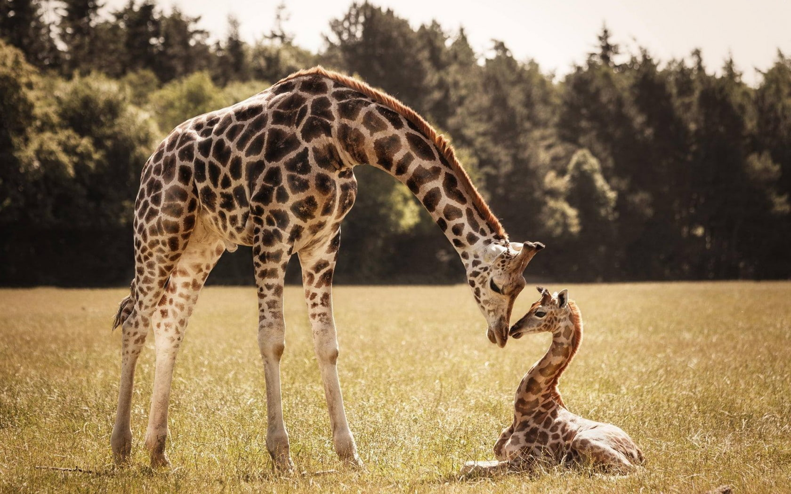

GIRAFFES
- Giraffes are the tallest land animals on Earth. They can reach heights of up to 18 feet (5.5 meters) and their long necks, which can be up to 6 feet (1.8 meters) in length, help them reach leaves high in trees.
- ust like human fingerprints, each giraffe has a unique spot pattern on its coat. No two giraffes have the same pattern, making it a valuable way to identify individuals.
- Giraffes have exceptionally large hearts, weighing up to 25 pounds (11 kilograms). This is necessary to pump blood all the way up their long necks to their brains, which can be located up to 20 feet (6 meters) above their hearts.
- Giraffes are herbivores and primarily feed on leaves, buds, and flowers from trees and shrubs. They have a special tongue that can be up to 21 inches (53 centimeters) long and is prehensile, allowing them to grasp leaves and pull them into their mouths.
- Giraffes are social animals and often live in loose groups called "towers." These groups can consist of females and their calves, while males tend to be more solitary. They communicate with each other through various vocalizations, including low-frequency sounds that are inaudible to humans.
DID YOU KNOW?
WHERE YOU WILL FIND THEM?
You will find the giraffes across the elephant pen, at pen E10, East-South of the zoo.